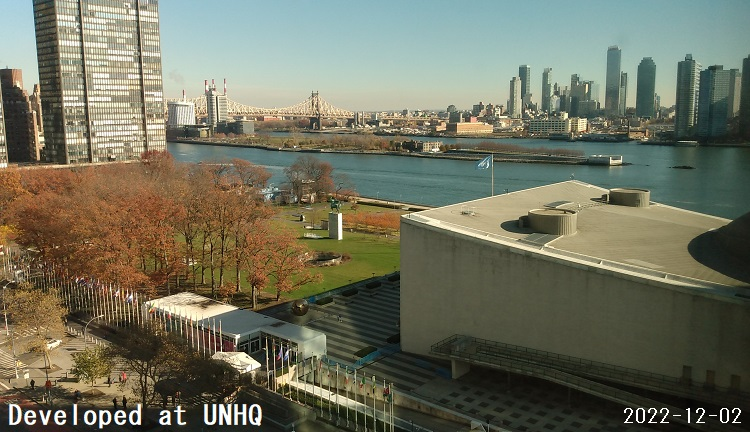

Albite - Test server
Vector tile server mainly for portable device (prototype).
Repository URL: https://github.com/ubukawa/albite

This is still a prototype server.
Albite (NaAlSi3O8) is a common minearal. So, I named after this hoping that this server will also be a common tool for users. It is also important to note that Albite metamorphoses into other mineral in the different condision (e.g. at high pressure).
Functions
Function 1: Delivery of pbf tiles via static hosting (simple static hosting)
You have "htdocs" folder for static hosting. If your vector tiles (in pbf format) are stored in "htdocs" directory, your VT can be accessible at:
http://(your server name):8836/(directory name in "htdocs")/{z}/{x}/{y}.pbf
e.g. http://raspberrypi.local:8836/zxy/test/1/1/1.pbf
e.g. http://rasberrypi400-123:8836/zxy/test/1/1/1.pbf
We have sample tile from NaturalEarth. Try pbf_tile/ne-test/1/1/1.pbf
Function 2: Delivery of pbf tiles from single mbtiles via server-side processing (nodejs)
If you stored your mbtiles in "mbtiles" directory, this server deliver "pbf" vector tiles from it upon requests. your VT can be accessible at:
http://(your server name):8836/VT/zxy/(mbtiles name)/{z}/{x}/{y}.pbf
e.g. http://rasberrypi400-123:8836/VT/zxy/test/1/1/1.pbf
e.g. http://rasberrypi400-123.local:8836/VT/zxy/test/1/1/1.pbf
We have sample tile from NaturalEarth. Try /VT/zxy/ne-test/1/1/1.pbf
This is the pbf extracted from mbtiles in the mbtiles folder, so it will fits for larger data, but can be accommodated into a single mbtiles file (e.g. up to a few GB).
Function 3: Delivery of pbf tiles from multiple mbtiles via server-side processing (nodejs)
This is a customized vector tile delivery for my own purpose. If you stored your multiple mbtiles in "UNmbtiles/(data set name)" directory, this server deliver "pbf" vector tiles from it upon requests. your VT can be accessible at:
http://(your server name):8836/UNVT/zxy/(data set name)/{z}/{x}/{y}.pbf
This is for our own use, and the data set is not uploaded in GitHub repository. There is certain rule for the mbtiles name so that this function works properly.
Function 4: Delivery of RGB elevation tiles (png) from multiple mbtiles via server-side processing (nodejs)
This is also a customized function for my own purpose. With the default configuration, up to ZL5, RGB elevation tiles is generated from rgbElev/0-0-0.mbtiles.
If we want larger tile than ZL5, we need to add 6-{x}-{y}.mbtiles that contains the RGB elevation tils within the extent of that 6-{x}-{y} area.
Try this: ./rgb-elev/zxy/2/1/1.png
* Try IP address if it does not work. (instead of raspberrypi, make sure that you use the name of your Raspbeery Pi.)
* Please confirm your mbtile is stored in mbtiles directory.
Sample maps
You can check the sample maps. Please make sure that you replaced the location of the vector tile in their style files.
map1: Sample map 1. source is from pbf
map2: Sample map 2. source is from mbtiles
map3: Sample map 3. Only for UN internal (need to add data source in mbtiles format.)